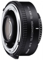

此镜头专为自动对焦 S 型或自动对焦 I 型的Nikkor 镜头而设，延续了同样优秀的光学设计，体积也与 TC-14E 和 TC-20E 增距镜相同。
成像出乎意料的好，小巧轻便，实用性强
1、成像素质好于另外两款增距镜，装在DZP上，对镜头成像几乎没有影响，可以忽略不计； 2.对通光量影响小，DZP只降低了一级的通光量，利于弱光下使用； 3..色彩还原好，对镜头的色彩还原几乎没有影响； 4.DZP使用增距镜后，对焦速度和防抖功能正常使用，影响极微； 5.做工精致，用材考究，耐用性好； 6、小巧轻便，便于携带；
没找到缺点。